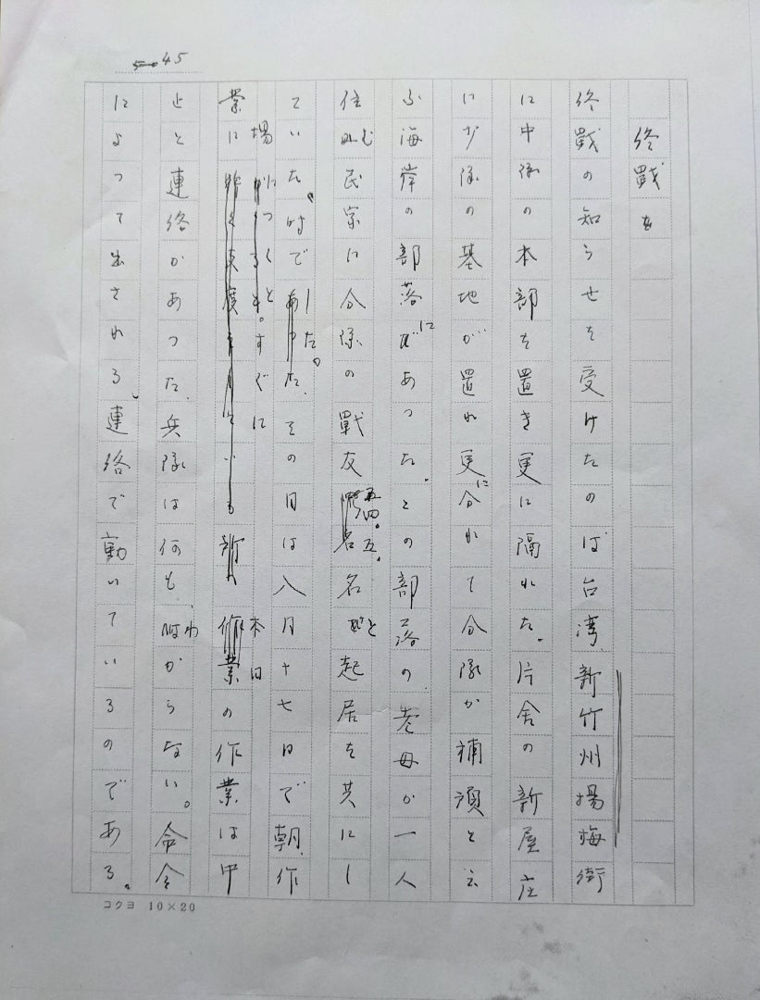
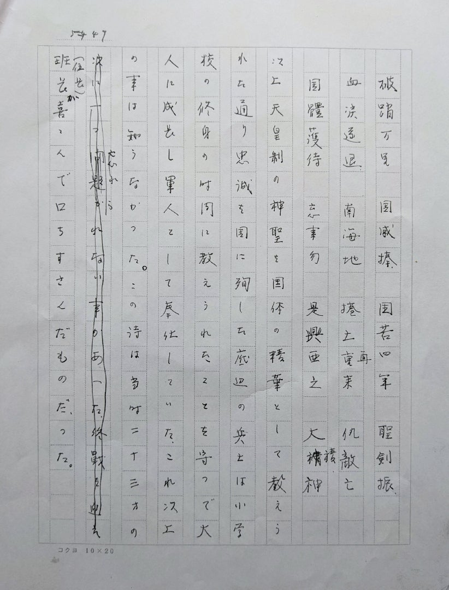

宮岡政雄「私の履歴書」台湾編（後半）
前回（2022年8月18日投稿）の
「私の履歴書」台湾編（前半）
に続いて 宮岡政雄が綴った台湾での軍隊生活の記録の後半を 採録します。
台湾で実感する戦況は厳しさを増し 敵の上陸に備えた訓練も始まった
1945年7月頃からのことです。
「敵の上陸迫る」から「列車にて帰宅」まで
敵の上陸迫る

当時のメモによると 7月に入り作業が厳しく給与が悪化し腹がすいてつかれた。夜間も灯火管制で 真っ暗で日記もつけられない。作業が夜まで続けられ戦況の困難さが兵隊の生活に現れてきた。こうした日が続くと兵隊は敵の上陸に対する手榴弾攻撃の訓練が行われ、目標は戦車と火煙放射機に対する肉弾の攻撃なのですが、当時は命令で動く人間でしかなかった。
6月27日 小隊長に叱られながら作業しているが 戦争とはいえ困難な生活である。この日も菊池さんからの便りがあり、これが唯一の慰めであった。当時は内地との連絡は既に出来なかったので 台湾在住の方でないと連絡はできなかった。この頃になると日記を何日か過ぎた頃にまとめてつける状態になった。このメモ帳も7月22日迄で紛失しているが、紛失したことは今日迄の私の家での生活がなくしているもので 当時は何とかの形でつけられたものだった。
終戦が迫る台湾も敵の上陸が迫っていたと感じられた。
終戦

終戦の知らせを受けたのは台湾新竹州楊梅街に中隊の本部を置き 更に離れた片田舎の新屋庄に小隊の基地が置かれ 更に分かれて分隊が補預(?) という海岸の部落にあった。この部落の老婆が一人住む民家に分隊の戦友四、五名と起居を共にしていた村でした。
その日は8月17日で 朝 作業につくとすぐに 本日の作業は中止 と連絡があった。兵隊は何もわからない。命令によって出される。連絡で動いているのである。次の連絡が何であるかで判断する以外なかった。
{kind=link}
だがこの時は 戦争は負けたらしいと その時ささやかれた。作業が中止し宿舎に戻る途中 小隊長が廻って来て 敗戦したと しょげた態度に見受けられた。明らかに暗い影を落としていた。職業軍人としての将来を感じさせたものだと直感した。
次の瞬間 戦争が終れば帰れる。家族と共に生活ができ 私は安定した農家としての基盤があることを思い、立川の飛行場も返される 早く帰って接収された土地を取り返したい と次の瞬間 連想した。
一方 小隊長（当時陸軍少尉）の職業軍人として敗戦後の生活を見通した時に いかにも気の毒に感じられた。こんな感じが 軍隊での勤務が上官（職業軍人）に嫌われた私の人柄ではなかったかと思われた。
この職業には全く自律・創造も許されない社会なのです。全て服従の社会。上意下達が命令として行われ、この命令には 事の良否も効率も問題ではない。全て消耗の社会であった。この点 小隊長の様子とは違って兵隊は、それ程の失望はなかった。自由の底辺の兵隊の生活には変わりがないからであろう。
この状態で考えられることは いつ帰れるか、の問いかけだけであった。終戦後も台湾軍は解隊されてはいない事だけが 厳重に命令されてきた。
私は当時の気持ちを何とかとらえた言葉を考え出そうと 必死にそれから考えた。一週間も考えた末に こんな詩にもならない詩を考えた。そのものを今も忘れないのです。
このことは 当時の私の偽りのない社会的知能的なものである。今日でも文章として成立っているか 私には判断がつかないのが事実です。
破踏万里 国威捧 国若四年 聖剣振
血涙遂退 南海地 捲土重来 仇敵亡
国體護持 忘事勿 是興亜之 大〔？〕神

以上 天皇制の神聖を国体の精華として教えられた通り 忠誠を国に殉した底辺の兵士は小学校の修身の時間に教えられたことを守って大人に成長し 軍人として奉仕していた。これ以上のことは知らなかった。この詩は当時23歳の班長（伍長）が喜んで口ずさんだものだった。
ここで終戦となり、この民家に12月復員まで過ごすが、終戦後 軍が共同生活を営む体制を整える為に仕事に就くに当たって 兵隊の希望調査が行われた。その時私は職業が農業だったので 農業以外の職業を復員までしたいと考えて、都会への就職を希望した。
この希望する都会への出張命令が来た。この命令を受けて約二ヶ月 宿舎として生活をしたこの宿舎の老婆と別れる時が来た。
約二ヶ月部屋を借りていた家の当時五十歳くらいの老婆が その日 大切なアヒルの卵をゆでて私に渡した。二ヶ月の生活の中で一度も言葉が通じて話はできなかった。双方が言葉が通じない異国人である。しかも私は敗戦国の兵士であった。全然立場が違ったのに 当時食糧はない。兵隊の食糧も配給は極度に少ない。鶏の卵は貴重な食糧であった。
アヒルの卵は鶏の卵の倍以上大きい。現地人では大事なものだった。当時の内地の人間関係から想像しても大事なものだ。その卵を私の為に三個ゆで 私が旅支度している所へ届け出してくれた。勿論言葉は通じない。だが母が子供の旅支度にお弁当を作り 道中食物がないと困るからと支度して下さった。母親の心情とでも言うのか……人間の不思議な縁には何とこの事実をとらえるのか私にはわからない……この老婆の好意は人間の何であるのか想像はつかない。
{kind=link}
住めば都とか 至る所に青山あり のあることも考えてもみた。この老婆の仕草も全ての兵士への仕草でもなさそうだ。この仕草を受ける私が上官に嫌われることはよくしみじみ感じられた。
こうして好意を受けて出たが、本部ではまた私に農耕作業を命じ その老婆の家に帰された。私の終戦から一ヶ月間位の生活の中での出来事であった。
台湾引上げ 昭和20〔1945〕年12月
終戦後四ヶ月 新屋庄にそのまま駐留し現地人の田んぼの端に陣地を作った付近を少し耕作し野菜を作ることが私の任務で もう一人の相手は満州の開拓者で過ごした人である。他の人達もそれぞれ任務につき 出張に出ていった。これとした任務もなく 小さな菜園をつくって輸送船の来るのを待つ毎日であった。現地人と少しも変りなく 穏かに日々が過せた
収穫期には四、五名で、農家に手伝いにも行った。現地の人達は宿舎の老婆も含めて 言葉は私たちには理解出来なかった。向うの人にも日本内地語の話せる人は少なかった。一般人は話そうとしなかったかもしれない。私も何となく恐さを感じることもあった。日本の教育も随分普及していたであろうが 農村の田舎には普及しきれていなかった様にしみじみ感じられた。そうした地域で穏かに過せたのは幸であった。
日は忘れたが12月20日少し過ぎた頃 突然帰還の命令が下りた。当時二十万と言われた台湾軍の初帰還船の乗船が私に当ったので 12月24日 四ヶ月過したこの部落を後に 本部の楊梅から基隆に向い 出港は基隆からであった。
船は駆逐戦夕凪だと思ったが 長い海戦は真赤に船体を錆にうずめていた 海戦の苦さは何ともみじめに感じさせた。
その船に乗船する復員兵の姿も他人が見たら哀れに映ったに相異ない。その時甲板に立てた喜びは 将来忘れられない喜びに違はなかった。この船が日本に運んでくれるかと疑わしくも思われた。
無事 船は一昼夜して鹿児島に入港した。途中ある地域で暴風雨圏に合い 嵐が吹き荒れていたこともあり 海洋の広さを思わさせられた。
上陸すると、乗船の時と同じように米兵の厳重な荷物の検査が行われ 何となく恐ろしい検査で 身のちぢむ思いがした。私は当時内地に砂糖がないと思い、炊事の戦友の好意で、特別に砂糖を持っていたので、米の中に入れて持ち帰った。幸い発見されなかった。
検査が終ると解放されたが、地方のおばさんが毛布を一枚百円で買いたいと話しかけた。初めて接した戦後の社会に 数人の人はお金にかえた。私は、毛布は今後の生活に便利なものだと考えて売らなかった。
戦前の農村の生活は寝具として布団が使われ、その布団も古い物を 毎年綿を打直しては使っていた。この布団の手入れは、十月養蚕が終ると忙しい間に手入れをするので 軍隊で使った毛布の便利さを今後の農村の生活の中にいかそうと 入営以来この二年間考えていた。一方、一枚毛布百円也とした内地の物価も、それとなく判断つきかねた。不安が既にここから感じられた。
列車にて帰宅
鹿児島から列車で帰宅の途についた。列車は普通の列車で一般の旅行者と同席で、東京迄三泊四日の長い旅で 席は 空席はなかったが通路は充分あいていた。当時は内地の列車には復員兵が方々から集ってくるので 私たちも格別に見られる状態ではなかった。
途中 食事は復員の時に支給されたカンパンをかじることが多かった。九州から本州へ渡った頃だと記憶しているが 旅客も通路に立っていない折に護持用の燃料で ハンゴで米を炊き、御飯を作った時もあった。
広島に近くなった頃、原爆の大きかった事を旅の人達が話し合っているのを耳にした。その時広島にあの恐ろしい被害があった事は 通過駅でありながら気づかなかった 夜間に通過した事であったかと思われたが 多くの乗合せた旅人が東京の被害の大きかった事と 大きな二つもの爆弾が落された事をなんとなく話している話を耳にした時、足が自然にふるえてならなかった。わが家は爆撃を受けていることが感じられてふるえたのでした。
夢中で東京駅で数人の戦友と別れ中央線に乗換えた。二、三人が中央線に来たが 誰であったか知らなかった。途中 荻窪辺りでその人も降りて一人立川駅に着いたのは 夜９時か10時頃であった。立川駅に降りたが北口がわからず、駅員に聞き聞き駅を出る。
街には米兵が随所に現れて街で初めて会う米兵が恐ろしく、こわかった。立川駅を出た時、初めて敗戦のこわさを感じた。この恐ろしい街を 駅から三、四百メートル隔てた伯母の家を訪ね道を教えて頂かないと家に帰れなかった。伯母の家も駅前だったが三、四百メートル強制で移転をしていた。今はそこまでどうたどりついたか、わからない。とにかく伯母の家についた。
突然訪れた私に伯母は泣き伏した。次の瞬間 家は焼夷弾で焼けたと伝えた。伯母には 焼かれた家は 過去自分が育った家でもあった。その夜は荷物を伯母の家に預け、叔父の自転車で我家に送られて 満一年半ぶりで帰ってきた我家 長かった出征の期間は 改めてとらえれば僅か一年半だった。
この一年半の間の変化は百年にも値したような変りようで、家ではなくバラックにこもを張り、真冬の夜風を凌いでいた。家族の者達の生活が哀れでならなかった。このバラックの中で私を迎えた妹は 私にいつ食物がどれだけあるのかと聞かれる事がつらかったと 後に話したが 私もその事は聞かなかった。
家族の者達も一生懸命生き抜いて居られて、毎日雑炊ではあったが食事には事欠かなかった。私はつい三、四日前迄 暑い台湾で正月でも水の中に入ることも出来る温度なのに 氷がはりつめる東京の寒さが身にこたえた。この寒さの中で私の終戦後の生活が始められた。
〔完〕